Chapter 6 · Part 1 — Spick-and-Span
“Be still,” said Jack.
Jack and Annie stood frozen as an elephant stepped out of the shadows. It waded into the pond and dipped its trunk into the water.
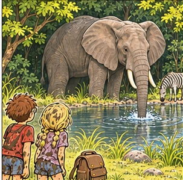
“Oh, wow,” said Annie.
Jack breathed a sigh of relief. An elephant wasn’t going to chase them and eat them. Still, the elephant was huge.
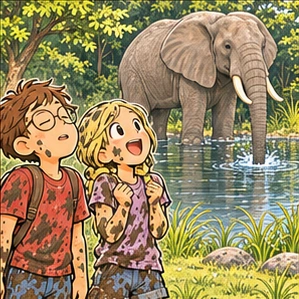
“Let’s sneak away,” said Jack.
“But I want to watch,” said Annie.
“Fine,” said Jack. He was tired of Annie getting sidetracked. “I’m going to solve the riddle by myself. I’ll meet you back at the tree house.”
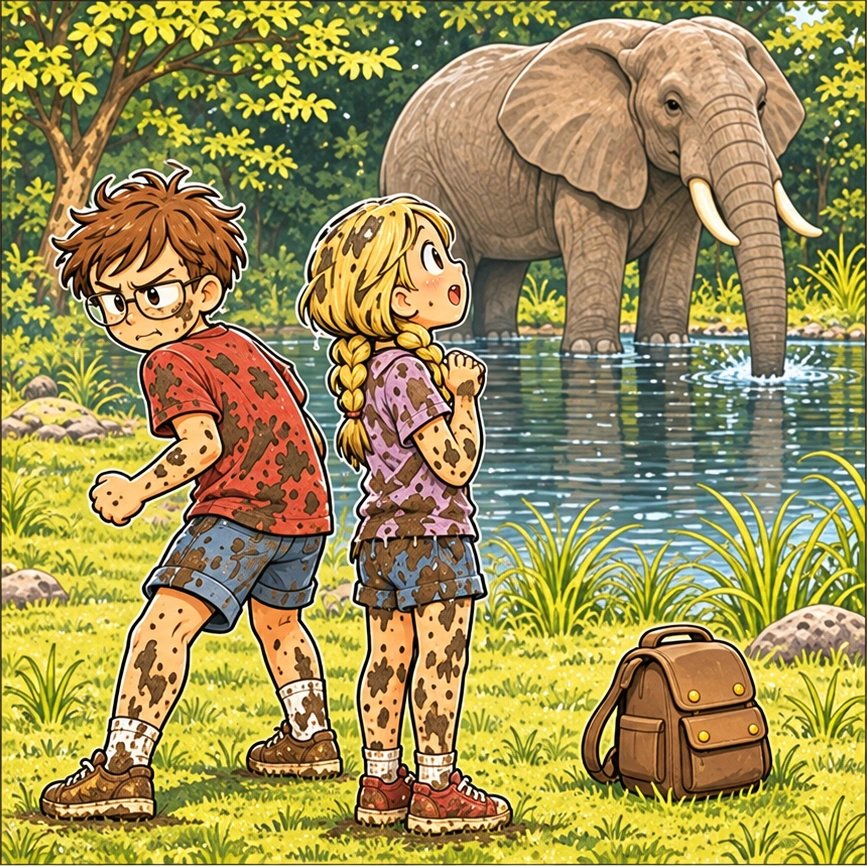
He turned to go. A spray of water rained down on him. It came from behind. He shouted with surprise and looked back.
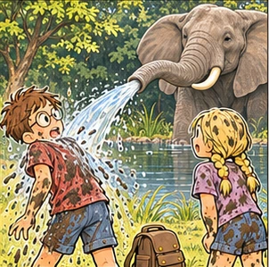
The elephant’s trunk was pointed straight at Annie.
“Cool!” she cried. “He’s giving me a shower!”
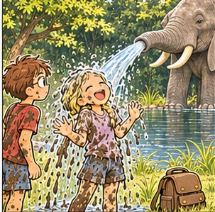
The elephant sprayed her again … then again. The mud slowly rolled off her face, her braids, her T-shirt, her shorts, her legs, and her sneakers
“I guess the elephant doesn’t like dirty kids!” said Annie, laughing. Her eyes were squeezed shut.
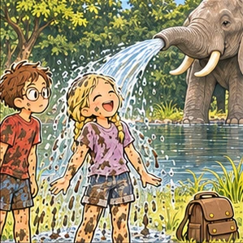
Finally, she was clean and soaking wet.
“Now it’s your turn,” she said to Jack.
Jack stepped forward and shut his eyes tight. A blast of water hit him. It did feel like a shower—a strong shower.
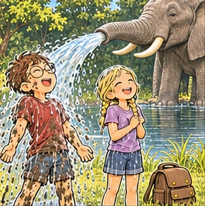
When Jack was clean, the elephant let out a grunt. Then he started to splash himself with water.
“Thanks!” said Annie.
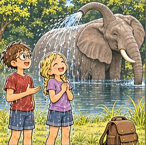
“Yeah, thanks!” said Jack.
“I’m spick-and-span now,” said Annie. “When the sun dries me off, I’ll be like new.”
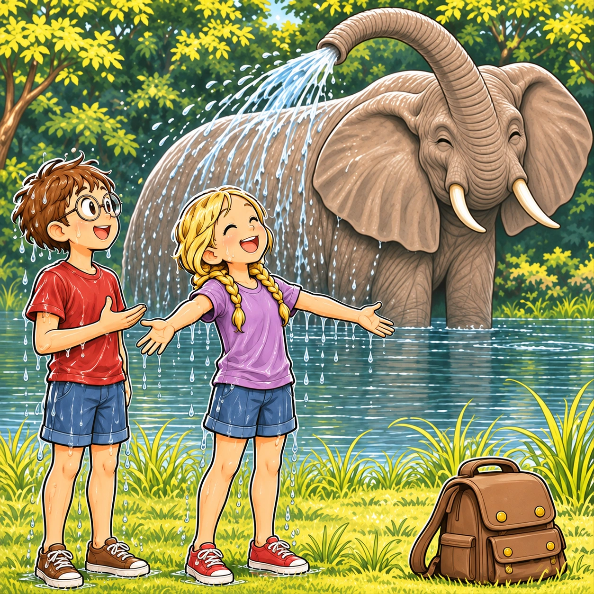
“Good,” said Jack. “Now we can get serious.”
He picked up his heavy pack. “We have to figure out the answer to the riddle. So we can leave this place … before we run into real trouble.”
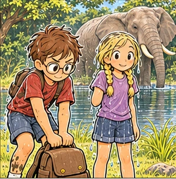
He looked around nervously. Where are the lions? he wondered.
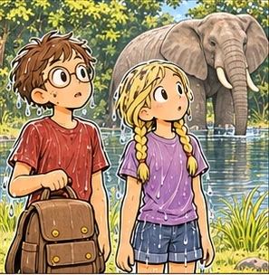
A small bird flitted near his head.
“Hi,” Annie said to the bird.
Jack turned back to her. “According to the riddle, we’re looking for something gold and sweet.”
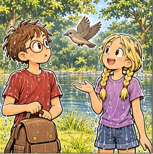
“What do you want?” Annie asked the bird.
The bird twittered and flew around Jack and Annie. Its feathers were dull gray. But it had a bright, happy manner.
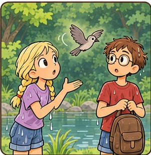
“Annie, listen to me, not the bird,” said Jack.
The bird kept fluttering around them.
“She’s trying to tell us something,” said Annie.
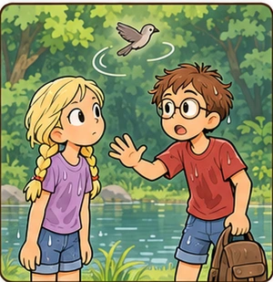
Jack let out a long sigh. “You are driving me crazy today,” he said.
“But I feel like she needs our help,” said Annie. “Maybe her babies fell out of the nest.”
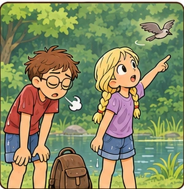
“Annie, you can’t save every animal in Africa,” said Jack.
“This bird is important,” said Annie. “Trust me.”
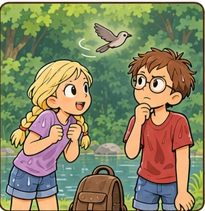
The bird darted toward the trees. It landed on a branch and cocked its head at them.
“She says follow,” said Annie.
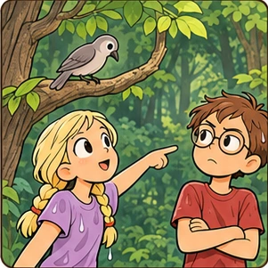
The bird headed into the forest. Annie started after it.
“Don’t go in there!” said Jack. “You might run into—”
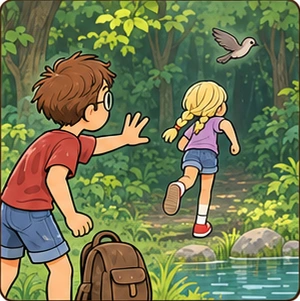
There was no need to finish. The bird and Annie had disappeared into the trees.
“—a snake or a lion,” Jack said to himself.
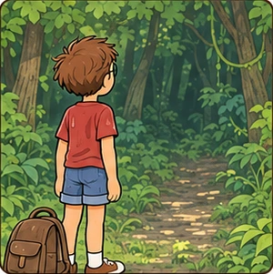
“Come on!” Annie called.
Jack moaned. He pulled on his pack and ran. The peanut butter jar thumped against his back.
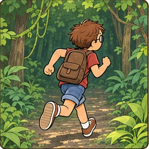